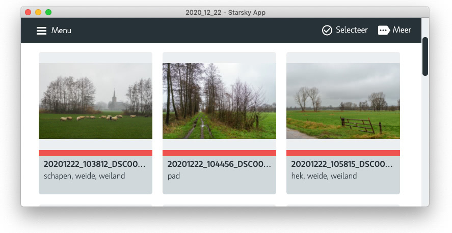

List of Starsky Projects
- starsky (sln) database photo index & import index project
- starsky web api application / interface
- clientapp react front-end application
- starskyImporterCli import command line interface
- starskyGeoCli gpx sync and reverse 'geo tagging'
- starskyWebHtmlCli publish web images to a content package
- starskyWebFtpCli copy a content package to a ftp service
- starskyAdminCli manage user accounts
- starskySynchronizeCli check if disk changes are updated in the database
- starskyThumbnailCli speed web performance by generating smaller images
- Starsky Business Logic business logic libraries (netstandard 2.0)
- starskyTest mstest unit tests
- starsky web api application / interface
- starsky.netframework Client for older machines (deprecated)
- starsky-tools nodejs tools to add-on tasks
- starskyapp Desktop Application
- Download Desktop App Windows and Mac OS version
- Changelog Release notes and history
Download Desktop App
Starsky is a free photo-management tool. It acts as an accelerator to find and organize images driven by meta information.
Windows 7 x64 or newer
Mac OS 10.12 or newer (Intel)
Mac OS users are warned since we don't have certificates from Apple
By downloading you agree to Starsky's Conditions of Use.
Please see our Privacy Notice and our
Cookies Notice